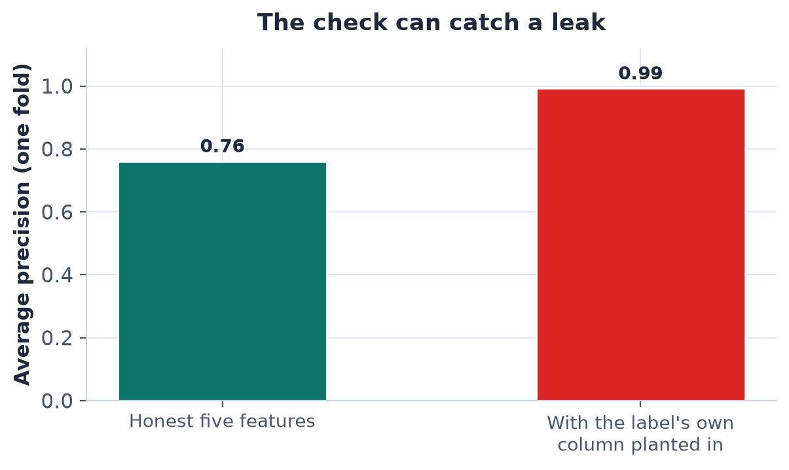
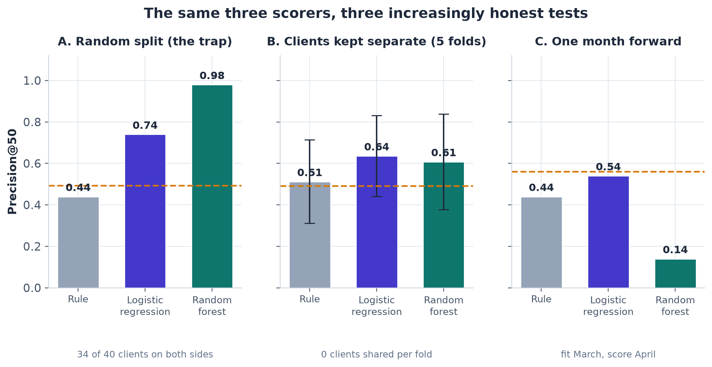
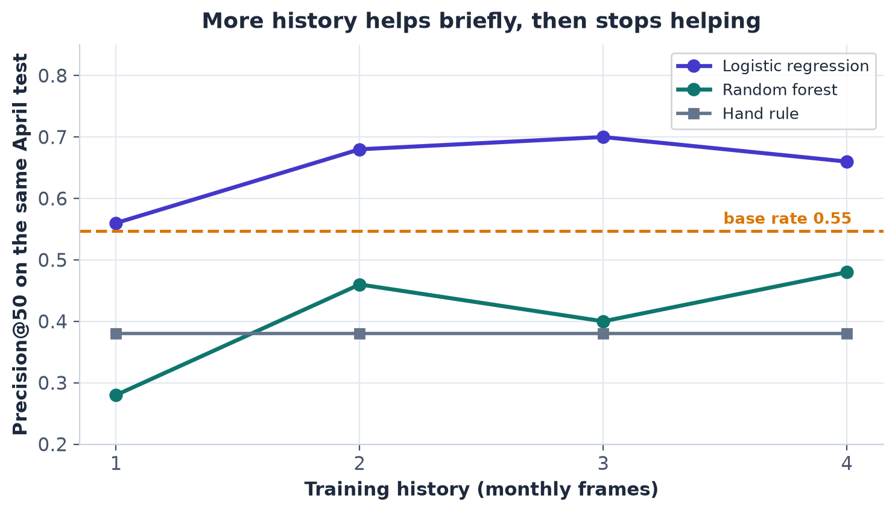
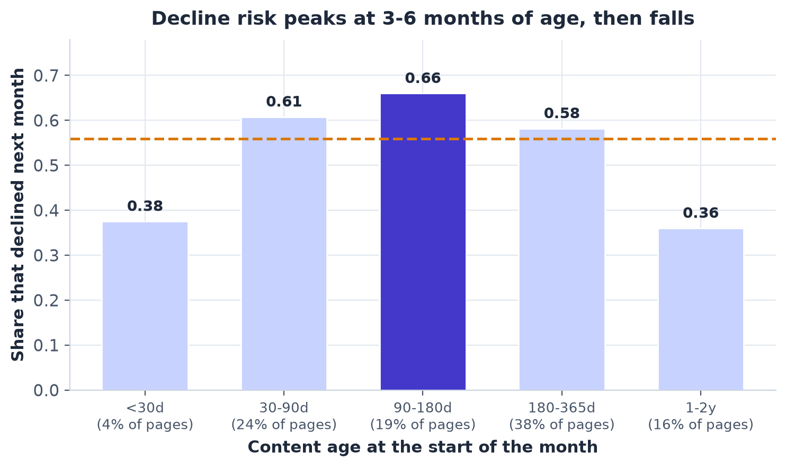
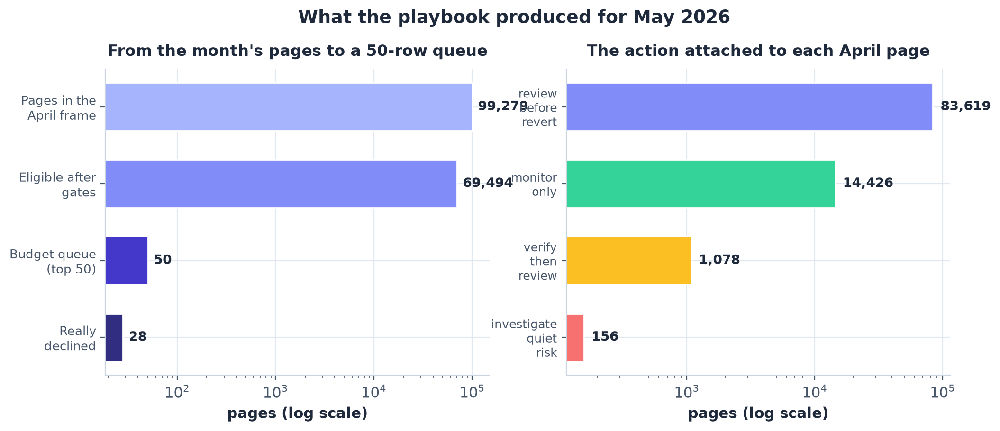

The short version
- Question
- An editor can review only 50 pages a month. Which pages should be at the top of that list?
- Data
- 95,810 pages across 40 client sites from an anonymized 79-million-row search warehouse. Each page is five numbers known at month-end, plus what actually happened next month.
- Result
- Inside the month, the model beat the hand rule at filling the 50 slots (precision@50 0.636 vs 0.512, base rate 0.49). One month forward, most of that edge was gone (0.54 vs rule 0.44, April base rate 0.56).
- Decision supported
- A monthly review order for a human editor — with a plain reason per page, gates that remove known-bad rows, and a fall-back to the rule.
- Biggest limitation
- The ranking decays within weeks and must be refit monthly; a naive random split would have shown 0.98 and been a lie.
Logistic regression vs. the hand rule, mean precision@50 across five client-grouped folds in March 2026. Base rate 0.49. Random forest: 0.608.
Fit on March, scored on April. Logistic regression still beats the rule — but the April base rate was 0.56, so the head of the queue no longer beats picking at random. Random forest fell to 0.14.
Random forest on a naive random split. 34 of 40 clients sat on both sides, so the model was re-describing pages it had already seen. Measured, reported, and treated as leakage — not skill.
Every term used in this paper, defined once
- Page — one piece of content on one client's site. Pages and clients appear only as scrambled codes; nothing client-identifying is in the data.
- Impressions — how many times a page appeared in Google search results in a 30-day window. Clicks — how many of those became visits.
- CTR — clicks divided by impressions, as a percentage.
- Position — the page's average rank in Google results; 1 is the top.
- Decline — the label: a page's impressions in the next 30 days fall below 80% of its impressions in the last 30 days.
- Base rate — the share of all pages that declined. Any ranking must be read against it.
- Precision@50 (P@50) — of the 50 highest-ranked pages, the share that really declined. The metric, because the budget is 50 reviews a month.
- The rule — the hand-written baseline: a transparent score built from three yes/no conditions.
- LR / RF — logistic regression and random forest, the two models compared against the rule.
- Frame — one table, one row per page: a feature month plus the next month's outcome. March frame = March features, April outcomes.
- Receipt — a committed JSON file of numbers produced by an executed notebook. Every number in this paper traces to one.
AAbstract
When a content team can spare only 50 page reviews a month, the practical question is which 50 pages should go first. We built one table per month from FlyRank's anonymized internship warehouse — about 79 million daily rows, from which the main working table holds 95,810 pages across 40 clients — where each page carries five numbers known at month-end and a label recording whether its search impressions fell by a fifth or more the following month. On those five numbers we trained two standard models, logistic regression and a random forest, and compared them against a hand-written rule under three tests: clients split into separate train and test groups, a jump one month forward in time, and a deliberately planted leak to prove the checks can catch cheating. Measured across five client-grouped folds, both models ranked the review queue above the rule (precision@50 of 0.636 and 0.608 versus 0.512, against a 0.49 base rate); one month forward the edge mostly disappeared (logistic regression 0.54 versus the rule's 0.44 and a 0.56 base rate; random forest 0.14), while a naive random split — which lets the model re-test pages from clients it has already seen — scored 0.98, a number we treat as a measurement of leakage, not skill. The shipped output is therefore a monthly review order for a human editor: a 50-row queue with a plain-language reason per row, gates that remove known-bad rows, and a standing rule that takes over whenever the model falls behind — decision support for choosing which pages to inspect, with no claim that reviewing or changing a page changes its traffic.
What this paper claims
Four claims, each tied to the section that proves it. Every number is observed and measured; every claim is directional and framed as decision support.
- Within one month, both learned models ranked pages above the hand rule on every one of five client-grouped folds: mean precision@50 of 0.636 (logistic regression) and 0.608 (random forest) versus 0.512 for the rule, against a 0.49 base rate. Section 4.
- The advantage is short-lived. One month forward, logistic regression stayed above the rule (0.54 vs 0.44) but did not beat picking at random (base rate 0.56); the random forest fell to 0.14. Adding up to four months of training history did not restore the edge. Section 4.
- The way the data is split can fake skill. On a naive random split the random forest scored 0.98 because 34 of the 40 clients landed on both sides — it was re-describing pages it had already seen, not forecasting. Section 4.
- The deliverable is a gated review queue, not a forecast: 50 rows, each carrying a model score for order, a rule flag for the reason, and one of four actions — plus hard limits on what is never automated. Monitoring clocks retire the queue when it goes stale, and a fall-back hands ordering back to the rule. Section 6.
1Introduction and problem statement
Search traffic to a page rarely dies in one day; it slides. By the time a page's numbers look bad in a monthly report, the decline has usually been under way for weeks. A content team that manages many sites therefore runs a standing question: of all the pages we could look at this month, which 50 should a person actually spend time on? The budget is fixed — roughly 50 reviews a month — so the value of the whole exercise lives in the order of the top of the list, not in the average quality of a score across a hundred thousand pages.
There is already a sensible way to answer this by hand. Old pages decline more often than fresh ones, and pages that rank near the top of Google results while hardly anyone clicks them are the classic refresh candidates. The internship's Week-4 baseline encodes exactly that intuition in a transparent three-condition score. The problem is that it is blunt: in the March 2026 working table, 24,462 pages tie at the rule's maximum score. "Top 50 by the rule" is a lottery draw from that tie band, and the band's own decline rate is 50.7% — barely above the month's 49.1% base rate.
So a model was trained to do the one thing the rule cannot: order the tie band (and the pages around it) using five numbers per page. But "did the model beat the rule" turned out to be the wrong question on its own — the answer depends entirely on how the comparison is run. This paper's spine is that dependency: the same three scorers (rule, logistic regression, random forest) under three increasingly honest tests, ending with the test that matters for deployment — trained on one month, scored on the next.
The cost of a wrong call is asymmetric and worth naming. A wasted review slot consumes roughly an hour of editor time out of a 50-hour monthly budget. A missed decline leaves a page to decay for another month. Neither is catastrophic, which is why this is a decision-support tool for a human — not an automation.
2Data
Source and scale
All data comes from the FlyRank ML Internship warehouse release, hosted (gated) at FlyRank/internship-warehouse on Hugging Face — about 79 million daily rows covering late 2025 through June 30, 2026, read with DuckDB, never downloaded in bulk. The release is already public-safe by construction: no client names, domains, URLs, page titles, or search queries exist in it. Pages and clients appear only as scrambled codes, used here for joining and grouping — never as model inputs.
Three tables were used: fact_content_daily_performance (one row per page per day of search performance), dim_content (page metadata, including creation date), and dim_clients (client context). The query-level table was excluded because its fixed 90-day window can overlap the outcome month, which would let future information into the features.
Frames: how the tables became one row per page
Everything is built as monthly frames: features come from one calendar month, the label from the next. The two frames used for the headline results:
Table 1 — the two working frames.
| Frame | Feature window | Label window | Pages | Clients | Base rate | Largest client |
|---|---|---|---|---|---|---|
| March 2026 (development) | Mar 2 – Mar 31 | Apr 1 – Apr 30 | 95,810 | 40 | 49.1% | 22.1% |
| April 2026 (scored for the queue) | Apr 1 – Apr 30 | May 1 – May 30 | 99,279 | 44 | 56.0% | 22.4% |
Receipts: work/outputs/validation_audit_metrics.json (frames), model_metrics.json (March frame build). June 2026 partitions were sealed and never read, so a future test exists if this work continues.
Who is in, who is out — and why
- Floors (upstream, in the data contract): a page needs at least 100 impressions and 14 days of data in its feature month to enter the frame at all. Below that, CTR and position are noise on tiny denominators and a "decline" can be one quiet day.
- Outcome-month tracking: the label needs the page to still be measurable next month. March kept 95,810 of 98,398 candidates — 2.6% dropped (391 with no outcome rows, 2,197 with thin coverage); April kept 99,279 of 102,943 (3.6% dropped). The bias points one way: pages whose tracking went quiet are excluded, so everything here describes pages that could still be measured.
- Excluded fields: all future-window values (e.g. next-month impressions — they are the answer), label-derived trend fields, provider/model production metadata, and fixed-window query signals. The five features below are the complete input; nothing else reaches the models.
The label
A page is labelled declining when its impressions in the next 30 days fall below 80% of its impressions in the last 30 days. The 80% line is a policy choice from the Week-3 data contract, checked for sensitivity: at 70% the decline rate is 42.6%, at 80% it is 49.1%, at 90% it is 55.6% — the pattern throughout this paper is stable across that range, and 0.80 was retained as the contracted threshold.
3Methodology
Assumptions, stated plainly
- The label is a proxy (a 20% impressions drop), not a business outcome like revenue.
- At decision time (month-end), only that month's five numbers and the page's age are available — so those are the only inputs.
- Review capacity, not scoring capacity, is the constraint: 50 pages a month.
- The unit of analysis is the page. Clients matter only because their pages are correlated — which drives the validation design.
Features — the complete list
Five features, and only these, in every model and every test in this paper:
| Feature | What it is |
|---|---|
log_recent30_impressions | Search impressions in the feature month (log scale) |
recent30_ctr_pct | Clicks ÷ impressions, as a percentage |
recent30_avg_position | Average rank in Google results (1 = top) |
recent30_active_days | Days in the month with impressions |
content_age_days | Days since the page was created, at month-end |
This list is exported by the pipeline and is identical in the notebooks, the receipts, and this paper. Nothing else enters the models.
The baseline rule
The Week-4 hand rule is a transparent weighted sum of three yes/no conditions, with no fitted weights: visible = at least 500 impressions; low CTR in top 10 = visible, average position 1–10, CTR under 1%; stale = visible and at least 91 days old. Score = 0.40·visible + 0.35·low-CTR-top-10 + 0.25·stale. Each page also carries one of five reason codes (stale_low_ctr_top10, stale, low_ctr_top10, visible, low_visibility) — the plain-language "why" that later becomes the reason column of the queue. A Week-4 signal audit confirmed both intuitions behind it: pages 91+ days old declined at 55.0% versus 42.5% for newer pages, and top-10 pages with CTR under 1% declined at 50.3% versus 18.6% for healthier top-10 pages.
Models
Two standard classifiers, deliberately simple, with library-default settings and no tuning: logistic regression (features standardized inside the training pipeline, so test-fold statistics never leak into training) and a random forest. Both output a probability of decline; the probability is the ranking score. Random seed 42 everywhere.
Validation design — the fair-test contract
Model and baseline are always evaluated under identical conditions: the same eligible rows, the same folds, the same metric (precision@50), and the same tie-break (impressions, highest first). Three tests, one question each:
- Test A — random split (the trap). A plain 80/20 row split. Clients land on both sides. It answers: how good does the model look when it is allowed to re-describe pages it has already seen? Run deliberately, as a lower bound on honesty.
- Test B — client-grouped, five folds. Five draws, each holding out a quarter of the ~40 clients; zero clients shared per fold (asserted in code, recorded per fold in the receipts). It answers: can the model rank pages for a client it has never seen?
- Test C — one month forward. Fit on the March frame, score the April frame, nothing retrained. It answers: does the ranking survive the month of drift between training and use — which is exactly how the queue is deployed?
A fourth, deeper test — walk-forward with growing history — asks whether Test C's drop is just a one-month-training artifact: the test side stays fixed on April while the training set grows from one to four monthly frames.
Leakage checks
- Timeline drawn: features end strictly before the label window opens — asserted at build time for every frame (e.g. March features Mar 2–31, label Apr 1–30; one day of separation).
- No label-derived features: the models see exactly the five contracted columns; trend and future fields never enter.
- No product flags: the rule's score is a baseline to beat, never an input.
- IDs group, they don't learn: client and page codes are used for grouping folds and joining tables only.
- Population checked: the outcome-month join was audited and its exclusion rates measured (Section 2).
- The harness itself was tested: a known leak — the label's own column — was planted in the feature matrix, and the score jumped from average precision 0.761 to 0.993. An audit that cannot catch a planted leak cannot clear an honest one. The column was removed; every number in this paper uses the honest five.

validation_audit_metrics.json.4Results: model vs. baseline, same tests
Table 2 — precision@50 for the three scorers under the three tests.
| Test | Hand rule | Logistic regression | Random forest | Base rate | Reads as |
|---|---|---|---|---|---|
| A. Random split (34 of 40 clients on both sides) | 0.44 | 0.74 | 0.98 | 0.49 | Looks perfect — because it is memory, not forecasting |
| B. Client-grouped (5 folds, mean ± spread) | 0.512 ± 0.201 | 0.636 ± 0.195 | 0.608 ± 0.230 | 0.49 | Both models beat the rule on every fold |
| C. One month forward (fit March, score April) | 0.44 | 0.54 | 0.14 | 0.56 | LR still above the rule, no longer above chance; RF collapses |
Receipts: validation_audit_metrics.json (random_split, grouped_cv, time_forward). Identical rows, folds, metric and tie-break for all three scorers in every test.

Read this chart honestly
This model is predictive, not causal. It does not prove that any feature is a search-ranking factor, nor that reviewing or changing a page will cause traffic to recover. Nothing in this paper ran an experiment on pages. The numbers are observed associations in historical data, measured to support one decision: which pages a person looks at first.
Test B in detail: the within-month win is real but wide
Table 3 — client-grouped folds, mean ± standard deviation across five folds.
| Scorer | Precision@50 | Average precision | ROC-AUC | Fold range (P@50) |
|---|---|---|---|---|
| Hand rule | 0.512 ± 0.201 | 0.492 ± 0.120 | 0.492 ± 0.028 | 0.32 – 0.84 |
| Logistic regression | 0.636 ± 0.195 | 0.557 ± 0.133 | 0.605 ± 0.065 | 0.40 – 0.86 |
| Random forest | 0.608 ± 0.230 | 0.561 ± 0.157 | 0.604 ± 0.068 | 0.38 – 0.84 |
Fold base rates ranged 0.39–0.62 (mean 0.49). Receipts: validation_audit_metrics.json (grouped_cv), model_metrics.json (per-fold rows and client overlap = 0).
The spread deserves as much attention as the means. The rule's fold scores wander from 0.32 to 0.84 because its top 50 is an arbitrary draw from a 24,462-page tie band whose underlying decline rate is 50.7%. The models break those ties — that is their whole job — but fold-to-fold client mix still moves everything: the audit measured 829 rows in the March frame with identical feature values, and in the strongest fold the random forest's top 50 came from just 3 of the 10 test clients (112 frame rows carry a >0.9 probability). Client clusters, not just model quality, shape any single fold. The paired LR-vs-RF difference (−0.028, standard deviation 0.059) is inside fold noise: the two models are not separable on five folds, and logistic regression is kept as the readable companion.
Test C and the walk-forward: the edge is a one-cycle instrument
Fit on March and scored on April, the random forest's precision@50 falls to 0.14 against a 0.56 base rate; logistic regression holds 0.54, above the rule's 0.44 but not above picking at random. Logistic regression does keep some global ordering (average precision 0.624 versus the rule's 0.559) — but the head of the list is what a 50-slot budget spends, and at the head the lift is gone. The base rate itself moved from about 20% in February to 56% in April, so the model was also shooting at a moving target.
Table 4 — walk-forward: precision@50 on the same April test, as training history grows.
| Training history | Hand rule | Logistic regression | Random forest |
|---|---|---|---|
| 1 monthly frame (Nov → Dec) | 0.38 | 0.56 | 0.28 |
| 2 frames (through Dec) | 0.38 | 0.68 | 0.46 |
| 3 frames (through Jan) | 0.38 | 0.70 | 0.40 |
| 4 frames (through Feb) | 0.38 | 0.66 | 0.48 |
Fixed panel — the clients present in every frame (20 clients per training side), test side always the same April rows (base rate 0.547). Receipt: validation_audit_metrics.json (walk_forward).

What the models actually learned
Permutation importance (measured on a held-out fold) puts CTR first by a wide margin — shuffling it costs about 2.5× more average precision than the next feature — then active days, then content age. The clearest interpretation mistake a linear model can make showed up on schedule: logistic regression's age coefficient came out negative even though staleness is a confirmed signal, because decline risk does not rise in a straight line with age. The measured shape, in the April frame:

The models' most confident mistakes repeated one pattern across weeks: pages ranked 1–2 in Google results with near-zero CTR (0.07–0.18%) on thousands of impressions, many from a single client. That is usually not decay — it is a results page that answers the question itself, or a brand-name search. Rewriting the page cannot fix either. That pattern is now a gate in the playbook (Section 6), not a lesson re-learned monthly.
5Limitations and honest framing
What this work cannot claim — written by the author, before a reader has to:
- Not causal. No page was experimentally changed. Nothing here shows that reviewing, refreshing, or rewriting a page affects its traffic in either direction. The queue orders risk; it does not promise that acting on it prevents anything.
- Short shelf life. The ranking is a one-cycle instrument: strong in the month it is fit, near chance one month forward (Test C), not rescued by more history (Table 4). Every recommendation in Section 6 follows from this.
- The label partly measures measurement. Pages with only 14–20 days of tracking in the outcome month declined at 96%, versus about 40% for pages covered all 30 days. Some "declines" are gaps in tracking, not drops in demand.
- Survivorship. 2.6% of March and 3.6% of April candidates were dropped for thin or absent outcome-month tracking — and those lean toward pages going quiet. This paper describes pages that could still be measured.
- Client concentration cuts both ways. The largest client is 22% of a frame; 829 frame rows share identical feature values; and in the current cycle one client holds 48% of the budget queue (the monitoring clock flagged it against a 35% limit). Fold means are five draws of unequal, correlated data — fold 3's test side alone is 70.6% of the frame — not five independent experiments.
- Five numbers cannot see content. Quality, search intent, results-page layout, seasonality, and business value are invisible to the features. A human reviewer sees all of them; that division of labour is the point of the design.
- One development month. The headline comparison (Test B) lives on March 2026. The walk-forward test covers more history but on a smaller fixed panel of clients.
- Untuned defaults. Both models run library-default hyperparameters. Tuning might move the numbers; it would not change the shape of the story, and it was deliberately not chased.
The claim this paper stands behind
Observed across five client-grouped folds in March 2026, both learned models ranked the review queue above the hand rule (means 0.636 and 0.608 versus 0.512, base rate 0.49). Measured one month forward, the lift at the head of the queue mostly disappeared (0.54 versus a 0.56 base rate). The models are directional decision support for choosing which pages a person reviews — to be refit monthly, checked against the rule, and never read as a forecast or a causal argument.
6Ranked recommendations — the action playbook
The output is a monthly review queue, built the way Test C validated it: models fit on March, scoring April. The rule explains, the model orders. Each of the 50 rows carries the scrambled page code, the model probability (the order), the rule flag (the reason), one of four actions, and a refresh hint pointing at the kind of work the features suggest.
The four actions
- review_before_revert
- The default. Look at the page, look at what people searched for when they found it, write down a hypothesis — then change content. Never revert on the score alone.
- verify_then_review
- Impressions moved more than 7× month-over-month in either direction. A jump that big is more often a tracking or analytics change than a demand change — check that first.
- monitor_only
- Impressions at least 1.5× last month. The page is rising; do not touch it. (Whether the rise lasts needs a second month — a one-month test, disclosed as such.)
- investigate_quiet_risk
- Model probability ≥ 0.70 but no rule flag: the model sees something it cannot explain. A person checks. This cycle, 49 of the 50 queued rows are this action.
Gates: what never reaches a reviewer
| Gate | Rule | Status | April hits |
|---|---|---|---|
| New pages | Under 30 days old, or no prior-month history | Implemented — exclude | 14,935 |
| Rising pages | Impressions ≥ 1.5× last month | Implemented (one-month test) — exclude | 14,850 |
| Rank 1–2, near-zero CTR | Position ≤ 2 and CTR < 0.20% | Implemented — senior look first | 214 |
| Extreme jumps | Impressions > 20× or < 1/20 of last month | Implemented — verify tracking first | 103 |
| Below floor | < 100 impressions or < 14 days of data | Implemented upstream (data contract) | — |
| Recently edited | Page changed in the last 30 days | Proposed only — the release has no edit-history table | — |
Gates run before the budget cut. This cycle they removed 14 rows from the ungated top 50. Receipt: action_playbook_summary.json.

action_playbook_summary.json.What this cycle's queue actually was — the honest read
The 50 rows are all pages the rule does not flag: small pages (100–150 impressions) with exactly 0.0% CTR at visible positions — seen in results, never clicked. Observed against April labels, the ungated top 50 declined at 0.54 (base rate 0.56); after gates, 0.56 — exactly the base rate. This month the queue is a diagnostic list, not a refresh list: 49 quiet-risk investigations at about an hour each (≈ 49.5 editor-hours, about 4,700 impressions at stake). That is the model behaving as trained — zero clicks at a visible position is the strongest pattern it learned — and it is precisely why the queue is framed as a review order and not a forecast.
The ranked actions, in order
- Cap per-client share of the queue before it goes to editors. One client holds 48% of this cycle's top 50 against a 35% limit — the concentration trigger fired. A per-client cap is a policy decision for whoever runs the sprint; until it is set, the list is not ready to hand out.
- Use the queue as a review order, with the checklist. For every row: what people searched for, what the results page looked like, technical state, seasonality, business value, and sensitive-topic routing (health / money / legal / safety pages go to subject-matter owners). The reviewer writes one of
act / defer / not_actionable / escalate— those decisions are worth more than another month of impressions, and they are the labels a future model should learn from. - Refit monthly; retire any queue older than its feature month. Test C and Table 4 are the evidence. An old queue is not a slightly worse queue — near the front it is close to a random list.
- Keep the fall-back armed. If the model's precision@50 lands below the rule's for two consecutive labelled months, ordering reverts to the rule until a refit beats it again. This cycle: LR 0.54 vs rule 0.44 — fall-back not triggered; the stricter check (model must clear the base rate by 0.05) did trigger, and is reported rather than hidden.
- Watch the drift clocks. Pre-release: feature stability (PSI) — position (0.108) and content age (0.179) sit in the "watch" band, under the act line of 0.25 — plus schema and base-rate drift checks, all passing. Post-release: label the queue when May outcomes arrive, recompute P@50 for model and rule on the same rows.
- Fix the data gaps the gates exposed. An edit-history table would let the recently-edited lockout move from proposed to implemented, and would remove re-reviews of pages someone just improved.
The no-go list — never automated, whatever the score
- No automated deletions, redirects, de-indexing, or page merges. Irreversible — and the model has no idea why a page exists.
- No unreviewed AI-written rewrites pushed live.
- No automated edits to health, money, legal, or safety pages.
- No bulk template or navigation changes triggered by page-level scores.
- No client-facing promises built on this score: precision@50 varies by about 0.2 between test splits.
- No acting on
monitor_onlyrows, and no rewriting rank-1/2 near-zero-CTR pages beyond checking which searches surface them.
7Reproducibility
Everything lives in one public repo: github.com/Tessa-Saumu/FlyRank-ML-Internship. The notebooks execute top to bottom; the receipts they write are committed, so every number on this page can be checked without rerunning anything.
Where each exhibit comes from
| Paper exhibit | Produced by | Receipt (committed) |
|---|---|---|
| Table 1 (frames), survivorship | w03_data_contract, w06_validation_audit | work/outputs/validation_audit_metrics.json |
| Rule definition, tie band, signal audit | w04_baseline_score | work/outputs/baseline_metrics.json |
| Tables 2–3, Test B | w05_model + w06 | model_metrics.json, validation_audit_metrics.json |
| Tests A and C, Table 4, Figure 5 (leak) | w06_validation_audit | validation_audit_metrics.json |
| Figures 1–2 | make_paper_figures.py (from receipts) | as above |
| Figures 3–4, gates, actions, monitoring | w07_action_playbook | action_playbook_summary.json |
| This page's number check | capstone.ipynb (receipt-check cell) | all four receipts |
How to rerun everything
git clone https://github.com/Tessa-Saumu/FlyRank-ML-Internshipandpip install -r requirements.txt.- Request access to the gated dataset
FlyRank/internship-warehouse(approval is instant) — the warehouse is read with DuckDB straight from Hugging Face, no bulk download. - Run the notebooks in order:
w03_data_contract→w04_baseline_score→w05_model→w06_validation_audit→w07_action_playbook. Each writes its receipt towork/outputs/. python work/scripts/make_paper_figures.pyregenerates every figure on this page from those receipts;capstone.ipynbre-checks each headline number against them.
Environment and seeds
- Random seed 42 for every split, model, and figure.
- Library versions of the committed run: pandas 3.0.3, numpy 2.5.1, scikit-learn 1.9.0, duckdb 1.5.4 (recorded inside every receipt; tree-based results can shift slightly between scikit-learn versions).
- This page is
docs/index.htmlin the repo, deployed with GitHub Pages from the/docsfolder. Figures live indocs/images/with relative paths.
Public-safety pass
The data release contains no client names, domains, URLs, titles, or queries — only scrambled codes — and this page adds none. All results are aggregates; no row-level client data is published. Claim language throughout is observed / measured / directional / decision-support, with no causal claims and no "predicted Google's algorithm" framing.
Acknowledgments and data credit
This work was built on the FlyRank ML Internship program and its anonymized research warehouse. Built on the FlyRank ML Internship dataset — a gated, pseudonymized release of real production search data, prepared and verified by the FlyRank team, and the reason every number in this paper describes something real rather than synthetic. Thanks to the program's track leads for the curriculum, the review sessions, and the standing instruction to write claims the evidence can actually carry.
Code in the repository is MIT-licensed; the dataset is governed by its own release terms on Hugging Face.